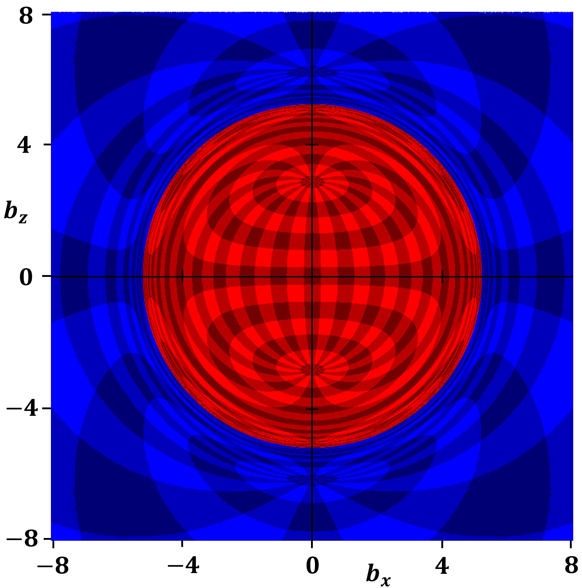
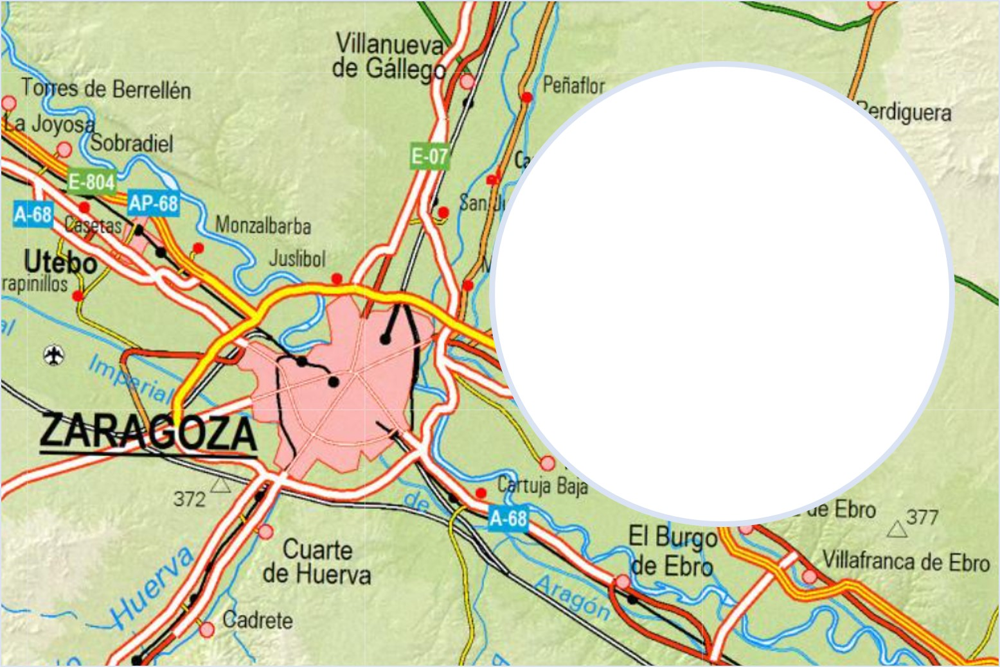

Agujeros negros
Un viaje a los objetos más extremos del universo
Introducción
Un agujero negro es una región del espacio-tiempo donde la gravedad es tan intensa que ni siquiera la luz puede escapar.
Este concepto surge de la teoría de la relatividad general formulada por Albert Einstein.
Puedes leer más sobre esto en el artículo de Relatividad general.
Esto es una cita. - A. Einstein


Representación artística de un agujero negro
Historia
Primeras ideas
Ya en el siglo XVIII, John Michell propuso la existencia de “estrellas oscuras”, objetos tan masivos que la luz no podía escapar.
Relatividad general
En 1915, Einstein desarrolló la teoría que explica la gravedad como curvatura del espacio-tiempo.
Fundamentos físicos
La gravedad depende de la masa y la distancia. Cuanto más concentrada está la masa, mayor es la curvatura.
La relación entre masa y energía viene dada por:
$$E = mc^2$$
El radio de Schwarzschild es:
$$r_s = \frac{2GM}{c^2}$$
Simulación (ejemplo de código)
Podemos aproximar el radio de un agujero negro con este código: